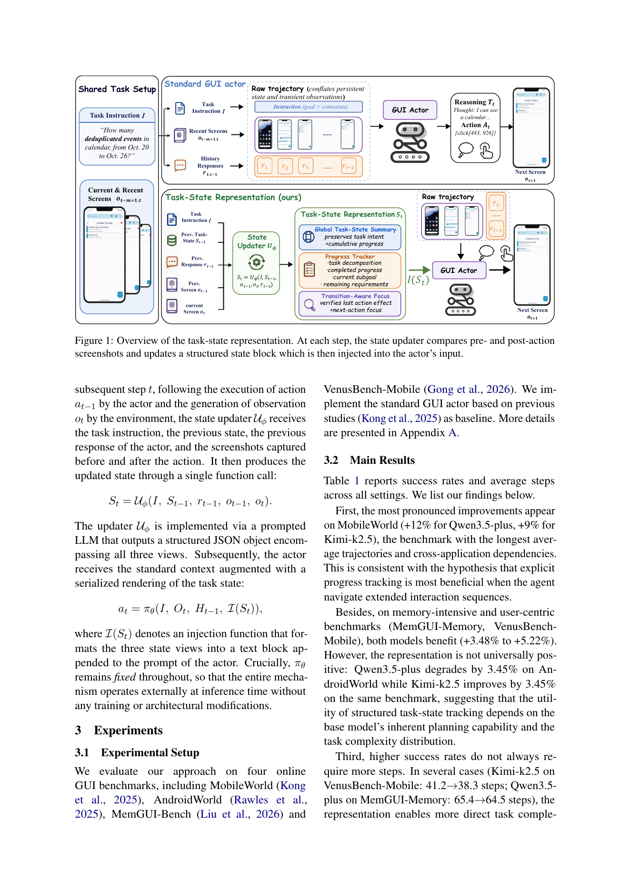
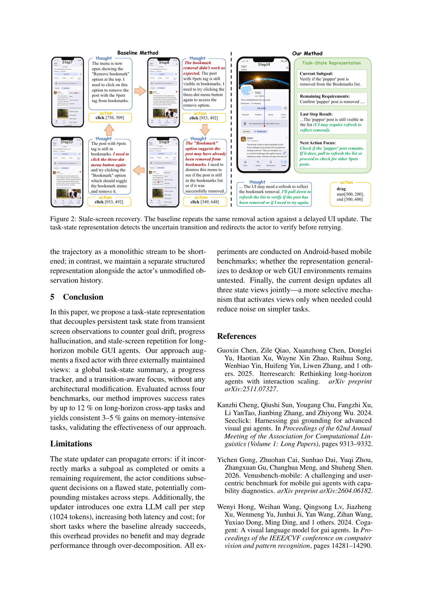
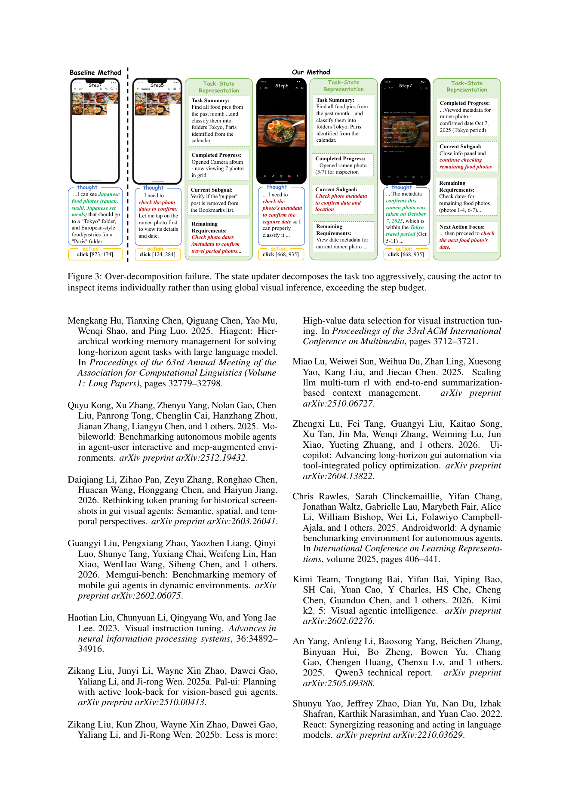
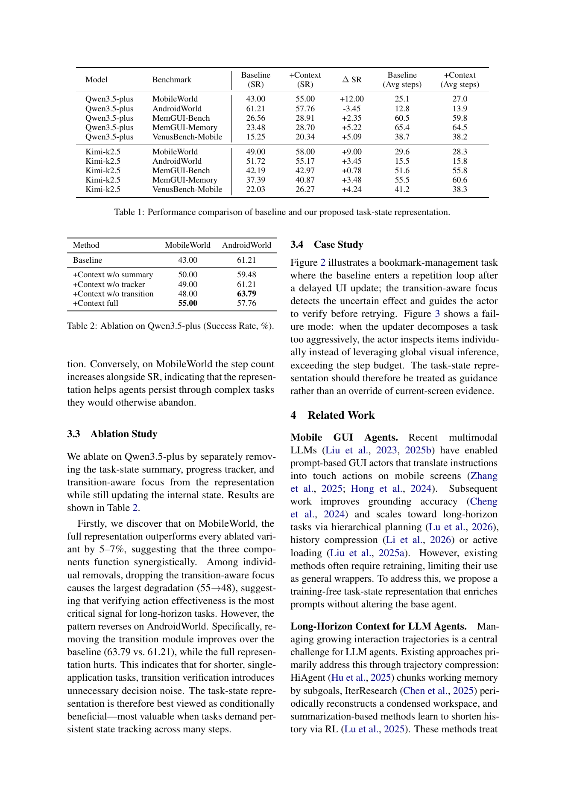
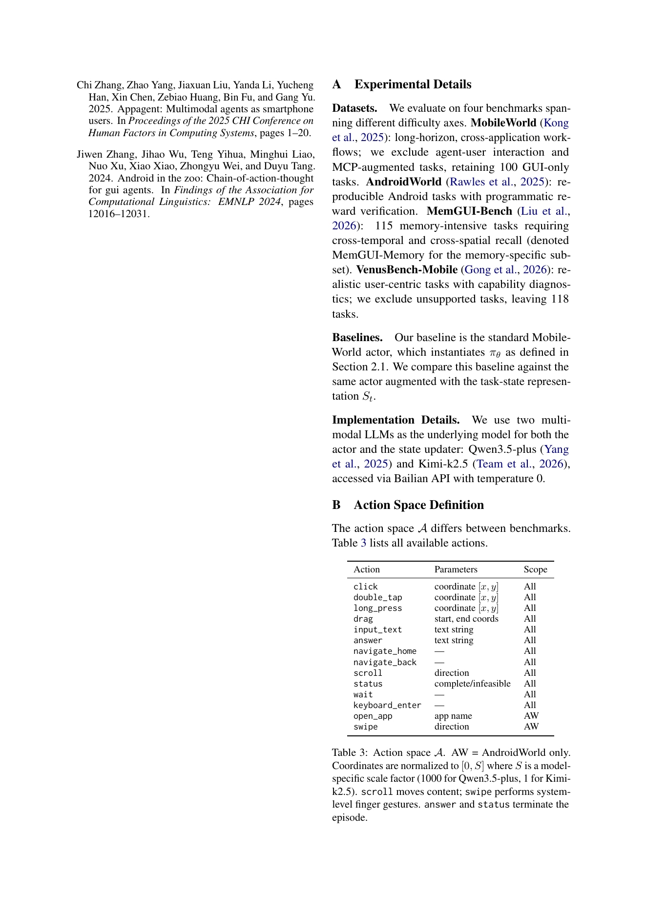
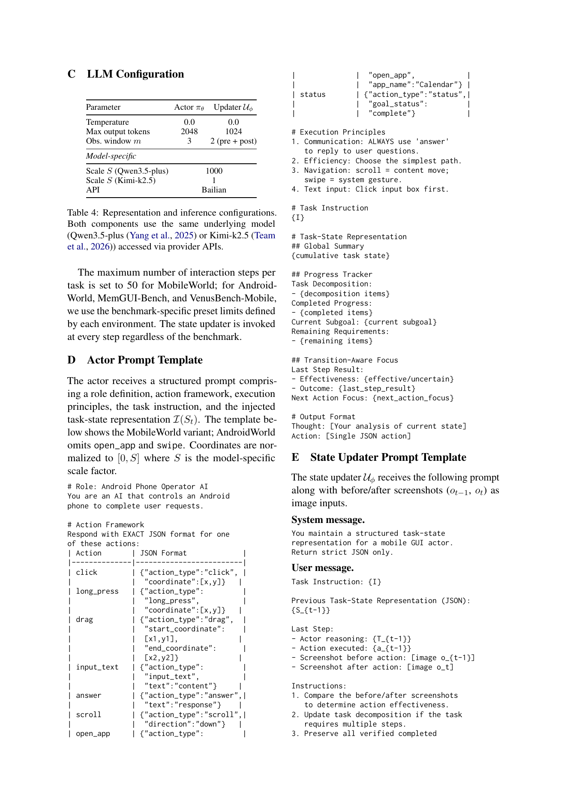

AI / Agent 晨间简报
生成日期：2026-07-03（周五）｜信息截止时间：2026-07-03 10:51:37 CST (UTC+0800)｜主题：GUI agent 架构、Agent Skill / MCP 工具链、GitHub star 动向、OpenAI / Anthropic 官方动态
1. 今日论文
选择理由：arXiv API 在本次运行中返回 rate exceeded，因此改用 arXiv 官方页面与 PDF 核验。未发现比 2026-07-01 这篇更适合“benchmark / agent 架构 / computer-use GUI agent”主题且尚未总结过的近期论文；它提出训练无关的 Task-State Representation wrapper，直接对应长程 GUI agent 的状态漂移问题。
A Task-State Representation for Long-Horizon Mobile GUI Agents
- 作者：Yujie Zheng, Zikang Liu, Xin Zhao, Ji-Rong Wen
- 发布日期：2026-07-01（arXiv submitted on 1 Jul 2026）
- 论文链接：arXiv:2607.00502；PDF
- 代码 / 项目页：本次核验未在 arXiv 页面发现官方代码或项目页；若作者后续补充，需要下次重新检查。
English overview
The paper argues that long-horizon mobile GUI agents fail partly because the usual thought-action-observation trace mixes persistent task state with transient screen evidence. The proposed Task-State Representation (TSR) is a training-free wrapper around an existing GUI actor. At each step, a state updater compares the screenshots before and after the last action and maintains three structured views: a global task summary, a progress tracker, and a transition-aware focus that verifies whether the last action actually changed the environment. This state is serialized back into the actor prompt, while the base actor remains fixed.
Across MobileWorld, AndroidWorld, MemGUI-Bench, MemGUI-Memory, and VenusBench-Mobile settings with Qwen3.5-plus and Kimi-k2.5, TSR improves many long-horizon and memory-intensive tasks, with the largest reported absolute gain of +12 success-rate points on MobileWorld. The limitation is equally important: the updater adds an extra LLM call at each step, can propagate wrong state, may over-decompose easy tasks, and is only tested on Android-based mobile GUI benchmarks.
对应中文翻译
论文认为，长程移动 GUI 智能体失败的部分原因，是常见的 thought-action-observation 轨迹把持久任务状态和短暂屏幕证据混在一起。作者提出的 Task-State Representation（TSR）是包在现有 GUI actor 外部的训练无关 wrapper。每一步中，state updater 会比较上一步动作前后的截图，并维护三类结构化视图：全局任务摘要、进度追踪器，以及用于验证上一步是否真正改变环境的 transition-aware focus。随后这些状态被序列化回 actor prompt，而基础 actor 本身保持不变。
在 MobileWorld、AndroidWorld、MemGUI-Bench、MemGUI-Memory 与 VenusBench-Mobile 等设置中，TSR 在 Qwen3.5-plus 与 Kimi-k2.5 上改善了许多长程与记忆密集任务，最大报告增益是在 MobileWorld 上 +12 个成功率百分点。局限也很关键：updater 每步增加一次 LLM 调用，错误状态可能沿轨迹传播，对简单任务可能过度拆解，而且实验只覆盖 Android 移动 GUI benchmark。
核心方法、创新点、实验结论与局限
- 核心方法：把 agent 的“持久任务状态”从屏幕 observation/history 中拆出来，用一个外部状态块维护，并通过 prompt 注入给固定 actor。
- 创新点：TSR 同时维护 global summary、progress tracker、transition-aware focus；其中 transition-aware focus 用动作前后截图判断动作是否生效，专门应对 stale screen 与重复动作。
- 主要实验结论：MobileWorld 上增益最大，Qwen3.5-plus 从 43.00 到 55.00，Kimi-k2.5 从 49.00 到 58.00；记忆密集设置也有约 3-5 个百分点提升。
- 可信度与局限：实验覆盖 4 个移动 GUI benchmark 与 2 个多模态模型，但 TSR 会增加每步 1024-token updater 调用；在 AndroidWorld 的 Qwen3.5-plus 上反而下降 3.45 点，说明它不是无条件更优。
论文公开图表
PDF 共 9 页；arXiv 备注为 3 figures，渲染与文本检查确认正文/附录共有 3 张图、4 张表。图采用 arXiv PDF 页面渲染截图，表格优先转写为 HTML；截图源页附在表格后用于核对。



Table 1：Performance comparison of baseline and task-state representation
| Model | Benchmark | Baseline SR | +Context SR | Delta SR | Baseline avg steps | +Context avg steps |
|---|---|---|---|---|---|---|
| Qwen3.5-plus | MobileWorld | 43.00 | 55.00 | +12.00 | 25.1 | 27.0 |
| Qwen3.5-plus | AndroidWorld | 61.21 | 57.76 | -3.45 | 12.8 | 13.9 |
| Qwen3.5-plus | MemGUI-Bench | 26.56 | 28.91 | +2.35 | 60.5 | 59.8 |
| Qwen3.5-plus | MemGUI-Memory | 23.48 | 28.70 | +5.22 | 65.4 | 64.5 |
| Qwen3.5-plus | VenusBench-Mobile | 15.25 | 20.34 | +5.09 | 38.7 | 38.2 |
| Kimi-k2.5 | MobileWorld | 49.00 | 58.00 | +9.00 | 29.6 | 28.3 |
| Kimi-k2.5 | AndroidWorld | 51.72 | 55.17 | +3.45 | 15.5 | 15.8 |
| Kimi-k2.5 | MemGUI-Bench | 42.19 | 42.97 | +0.78 | 51.6 | 55.8 |
| Kimi-k2.5 | MemGUI-Memory | 37.39 | 40.87 | +3.48 | 55.5 | 60.6 |
| Kimi-k2.5 | VenusBench-Mobile | 22.03 | 26.27 | +4.24 | 41.2 | 38.3 |
Table 2：Ablation on Qwen3.5-plus (Success Rate, %)
| Method | MobileWorld | AndroidWorld |
|---|---|---|
| Baseline | 43.00 | 61.21 |
| +Context w/o summary | 50.00 | 59.48 |
| +Context w/o tracker | 49.00 | 61.21 |
| +Context w/o transition | 48.00 | 63.79 |
| +Context full | 55.00 | 57.76 |

Table 3：Action space A
| Action | Parameters | Scope |
|---|---|---|
| click | coordinate [x, y] | All |
| double_tap | coordinate [x, y] | All |
| long_press | coordinate [x, y] | All |
| drag | start, end coords | All |
| input_text | text string | All |
| answer | text string | All |
| navigate_home | - | All |
| navigate_back | - | All |
| scroll | direction | All |
| status | complete / infeasible | All |
| wait | - | All |
| keyboard_enter | - | All |
| open_app | app name | AndroidWorld only |
| swipe | direction | AndroidWorld only |

Table 4：Representation and inference configurations
| Parameter | Actor pi-theta | Updater U-phi |
|---|---|---|
| Temperature | 0.0 | 0.0 |
| Max output tokens | 2048 | 1024 |
| Observation window m | 3 | 2 (pre + post) |
| Scale S (Qwen3.5-plus) | 1000 | 1000 |
| Scale S (Kimi-k2.5) | 1 | 1 |
| API | Bailian | Bailian |

2. GitHub 三日增长项目
排名方法：GitHub REST/API 不提供任意历史 star 总量。本次没有约 72 小时前的同口径快照；因此采用“当前 stars - 2026-07-02 日报快照”的短窗口代理差分，窗口约 18 小时，不声称为严格三日新增。
| 项目 | 用途简介 | 语言 | 最近更新时间 | 当前 stars | 2026-07-02 快照 | 短窗新增 |
|---|---|---|---|---|---|---|
| obra/superpowers | Agentic skills framework 与软件开发方法论，围绕 skill 驱动的工程协作。 | Shell | 2026-07-03 02:43:27 UTC | 244,540 | 243,804 | +736 |
| NousResearch/hermes-agent | Nous 的自成长 agent 项目，聚焦长期运行中的能力积累。 | Python | 2026-07-03 02:41:02 UTC | 208,093 | 207,559 | +534 |
| multica-ai/andrej-karpathy-skills | 从 Karpathy 观察提炼的 CLAUDE.md/agent 行为改进配置。 | 未标明 | 2026-07-03 02:41:36 UTC | 186,753 | 186,327 | +426 |
| affaan-m/ECC | Agent harness 性能优化系统，覆盖 skills、instincts、memory、安全与 research。 | JavaScript | 2026-07-03 02:40:56 UTC | 225,232 | 224,813 | +419 |
| firecrawl/firecrawl | 面向 agent/RAG 的网页搜索、抓取与结构化交互 API。 | TypeScript | 2026-07-03 02:41:07 UTC | 143,299 | 142,920 | +379 |
数据来源：GitHub authenticated REST API（gh api），查询时间：2026-07-03 10:45 CST。排序按短窗新增 stars 降序。
3. GitHub 高 Star 未总结项目
筛选与排除：检查了当前线程历史与 /Users/wuyuyang/Documents/Rhythm 下 10 份 morning-brief*.html。凡此前 GitHub 板块、候选快照或已总结集合中出现过的仓库均排除；同时排除泛教程、系统提示泄露、传统自动化框架、非 agent 主题项目。以下按当前总 stars 降序。
| 项目 | 用途与核心能力 | 为什么值得关注 | 语言 | 最近更新时间 | 当前 stars |
|---|---|---|---|---|---|
| VoltAgent/awesome-design-md | 收集主流品牌 DESIGN.md / 设计系统说明，用于让 coding agents 生成一致 UI。 | 它把“设计上下文”变成可交给 agent 的项目内技能/约束，适合跟你现在的白底简报站点、概览图自动化结合。 | 未标明 | 2026-07-03 02:44:45 UTC | 95,297 |
| karpathy/autoresearch | 让 AI agents 自动运行单 GPU nanochat 训练研究流程。 | 它把研究循环自动化成可执行 pipeline，是 agent 介入 ML 实验/研究迭代的高关注样本。 | Python | 2026-07-03 02:32:03 UTC | 89,576 |
| JuliusBrussee/caveman | Claude Code skill，目标是用极短上下文表达压缩 token。 | 它代表 Agent Skill 生态里“低成本上下文工程”的方向，对长任务代理和日报自动化都很实用。 | JavaScript | 2026-07-03 02:42:01 UTC | 81,169 |
| safishamsi/graphify | 面向 Claude Code、Codex、OpenCode、Cursor、Gemini CLI 等的代码图谱/知识图生成 skill。 | 它直接服务 coding agent 的代码库理解，和你关心的工具链、检索增强与 agent memory 很贴近。 | Python | 2026-07-03 02:39:42 UTC | 76,234 |
| Egonex-AI/Understand-Anything | 把代码转成可探索、可搜索、可问答的交互式知识图。 | 它把代码库结构外显给 agent 和人，适合观察“computer-use / coding agent 如何减少上下文盲区”。 | TypeScript | 2026-07-03 02:36:12 UTC | 70,426 |
候选来源包括 GitHub Search（agent、AI agent、multi-agent、coding-agent、MCP、model context protocol、computer-use agent、agent benchmark/evaluation 等关键词）与手工补充的常见 agent 工具链仓库；最终入选以“直接服务 agent 架构、Agent Skill、coding agent、MCP/toolchain”为准。
4. OpenAI / Anthropic 动态
OpenAI
未发现新发布内容。官方 News 页面本次核验时最新可见条目仍为 2026-06-30 的 Introducing GeneBench-Pro 与 Core dump epidemiology；未发现自 2026-07-02 16:45 CST 上次日报以来的新技术博客、研究文章、开发者更新或官方视频条目。
Anthropic
- More details on Fable 5’s cyber safeguards and our jailbreak framework（2026-07-02，Announcements）：Anthropic 在官方 News 列表新增 Fable 5 cyber safeguards 与 jailbreak framework 的补充说明。与 6/30 的 redeploying Fable 5 相比，这是后续安全治理细节更新，重点在越狱严重度框架和模型安全措施。
未在官方页面发现新的官方视频条目。
5. 来源与方法
主要来源
- 论文：arXiv abstract page；arXiv PDF。
- GitHub：GitHub authenticated REST API via
gh api repos/<owner>/<repo>；GitHub Search API 关键词候选。查询时间：{esc(query_time)}。 - OpenAI 官方：OpenAI News；Introducing GeneBench-Pro；Core dump epidemiology。
- Anthropic 官方：Anthropic News；Fable 5 cyber safeguards and jailbreak framework；Redeploying Fable 5。
数据限制与不确定性
- arXiv API 在本次运行中返回 rate exceeded；论文元数据改由 arXiv 官方 HTML 页面与 PDF 文件核验。
- GitHub stars 为查询时实时值；严格三日历史 star 总量无法由 GitHub REST API 直接获得。本次短窗新增使用 2026-07-02 日报快照做差，不能等同完整 72 小时增长。
- 首次匿名 GitHub REST API 触发 rate limit；随后使用本机已认证
gh api重新查询，成功获得 213 个候选仓库当前快照，2 个候选返回 404。 - OpenAI 官网对本地 urllib 抓取返回 403，但浏览检索可访问官方 News 页面；因此官方动态以可访问的官方页面与链接核验为准。
- 论文图表来自 arXiv PDF 页面渲染；表格由人工按渲染页面转写为 HTML，并保留对应源页截图以便核对。
GitHub star 快照：增长候选
| 仓库 | 当前 stars | 基线快照 | 短窗新增 | 语言 |
|---|---|---|---|---|
| obra/superpowers | 244,540 | 243,804 | +736 | Shell |
| NousResearch/hermes-agent | 208,093 | 207,559 | +534 | Python |
| multica-ai/andrej-karpathy-skills | 186,753 | 186,327 | +426 | 未标明 |
| affaan-m/ECC | 225,232 | 224,813 | +419 | JavaScript |
| firecrawl/firecrawl | 143,299 | 142,920 | +379 | TypeScript |
| farion1231/cc-switch | 112,437 | 112,131 | +306 | Rust |
| anomalyco/opencode | 181,775 | 181,487 | +288 | TypeScript |
| anthropics/skills | 157,729 | 157,499 | +230 | Python |
| browser-use/browser-use | 102,251 | 102,093 | +158 | Python |
| anthropics/claude-code | 135,538 | 135,397 | +141 | Python |
| shareAI-lab/learn-claude-code | 69,628 | 69,548 | +80 | Python |
| langchain-ai/langgraph | 36,349 | 36,283 | +66 | Python |
| FlowiseAI/Flowise | 54,214 | 54,189 | +25 | TypeScript |
| run-llama/llama_index | 50,607 | 50,584 | +23 | Python |
| agno-agi/agno | 40,968 | 40,956 | +12 | Python |
GitHub star 快照：高 Star 候选与排除
| 仓库 | 当前 stars | 语言 | 处理 |
|---|---|---|---|
| Snailclimb/JavaGuide | 156,763 | JavaScript | 排除：泛后端/面试指南，非 agent 项目 |
| x1xhlol/system-prompts-and-models-of-ai-tools | 141,451 | 未标明 | 排除：系统提示泄露/资料集合，非 agent 架构或工具项目 |
| VoltAgent/awesome-design-md | 95,297 | 未标明 | 入选 |
| karpathy/autoresearch | 89,576 | Python | 入选 |
| JuliusBrussee/caveman | 81,169 | JavaScript | 入选 |
| safishamsi/graphify | 76,234 | Python | 入选 |
| dair-ai/Prompt-Engineering-Guide | 76,160 | MDX | 排除：泛 prompt/RAG/教程集合，非 agent 专项项目 |
| Egonex-AI/Understand-Anything | 70,426 | TypeScript | 入选 |
| addyosmani/agent-skills | 68,612 | Shell | 候补：相关但 stars 低于入选 Top 5 |
| microsoft/ai-agents-for-beginners | 68,435 | Jupyter Notebook | 候补/排除：教程为主，非工程项目 |
| earendil-works/pi | 67,246 | TypeScript | 候补：相关但 stars 低于入选 Top 5 |
本次新增至“已总结仓库集合”的仓库
obra/superpowers, NousResearch/hermes-agent, multica-ai/andrej-karpathy-skills, affaan-m/ECC, firecrawl/firecrawl, VoltAgent/awesome-design-md, karpathy/autoresearch, JuliusBrussee/caveman, safishamsi/graphify, Egonex-AI/Understand-Anything。
归档与发布状态
已成功执行 designs/agent-brief-archive/scripts/update-and-publish.sh；本地归档、概览 SVG 与 GitHub Pages 仓库已更新并推送。公开站点可能受 GitHub Pages 构建与 CDN 缓存影响，通常需要数分钟完全刷新。